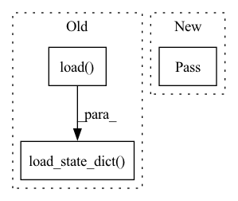

Pattern ID :4356

Before Change
if exists(ckpt_path):
//path = max(list((cfg.ckpt_path).glob("*.pth")))
log.info(f"Loading checkpoint {ckpt_path}")
ckpt = torch.load(ckpt_path)
first_epoch = ckpt["epoch"] + 1
self.model.load_state_dict(ckpt["model_state_dict"])
if is_train:
self.optimizer.load_state_dict(ckpt["optimizer_state_dict"])
self.scheduler.load_state_dict(ckpt["scheduler_state_dict"])
else:
After Change
def load_ckpt(self, ckpt_path, is_train=True):
// TODO
pass
def save_ckpt(self, path_ckpt, epoch):
// TODO
In pattern: SUPERPATTERN
Frequency: 4
Non-data size: 3
Instances
Fragment ID: 16071863
Project Name: isl-org/open3d-ml
Commit Name: 7afdd846e508ff4c3b924a1109e87e2b68d4e633
Time: 2020-08-21
Author: yilingq@umd.edu
File Name: ml3d/tf/pipelines/semantic_segmentation.py
M Class Name: SemanticSegmentation
N Class Name: SemanticSegmentation
M Method Name: load_ckpt(3)
N Method Name: load_ckpt(3)
M Parent Class:
N Parent Class:
M File Name: ml3d/tf/pipelines/semantic_segmentation.py
N File Name: ml3d/tf/pipelines/semantic_segmentation.py
M Start Line: 213
M End Line: 226
N Start Line: 135
N End Line: 135
'>
Before Change
self.actor.load_state_dict(
torch.load(os.path.join(save_dir, "actor.pth"), map_location=torch.device(get_device()))
)
self.actor_lstm.load_state_dict(
torch.load(os.path.join(save_dir, "actor_lstm.pth"), map_location=torch.device(get_device()))
)
After Change
@abstractmethod
def load_actor(self, save_dir: str) -> None:
pass
'>
Fragment ID: 16071869
Project Name: zhihanyang2022/off-policy-continuous-control
Commit Name: 46e115e28ed1a53fee785e91a73419b85bab3d86
Time: 2021-06-05
Author: yangz2@carleton.edu
File Name: offpcc/basics/abstract_algorithm.py
M Class Name: RecurrentOffPolicyRLAlgorithm
N Class Name: RecurrentOffPolicyRLAlgorithm
M Method Name: load_actor(2)
N Method Name: load_actor(2)
M Parent Class: ABC
N Parent Class: OffPolicyRLAlgorithm
M File Name: offpcc/basics/abstract_algorithm.py
N File Name: offpcc/basics/abstract_algorithm.py
M Start Line: 90
M End Line: 95
N Start Line: 52
N End Line: 52
'>
Before Change
def load_actor(self, save_dir: str) -> None:
Load the actor network only
self.actor.load_state_dict(
torch.load(os.path.join(save_dir, "actor.pth"), map_location=torch.device(get_device()))
)
class RecurrentOffPolicyRLAlgorithm(OffPolicyRLAlgorithm):
After Change
@abstractmethod
def load_actor(self, save_dir: str) -> None:
pass
class RecurrentOffPolicyRLAlgorithm(ABC):
'>
Fragment ID: 16071871
Project Name: zhihanyang2022/off-policy-continuous-control
Commit Name: 46e115e28ed1a53fee785e91a73419b85bab3d86
Time: 2021-06-05
Author: yangz2@carleton.edu
File Name: offpcc/basics/abstract_algorithm.py
M Class Name: OffPolicyRLAlgorithm
N Class Name: OffPolicyRLAlgorithm
M Method Name: load_actor(2)
N Method Name: load_actor(2)
M Parent Class: ABC
N Parent Class: ABC
M File Name: offpcc/basics/abstract_algorithm.py
N File Name: offpcc/basics/abstract_algorithm.py
M Start Line: 54
M End Line: 56
N Start Line: 25
N End Line: 25